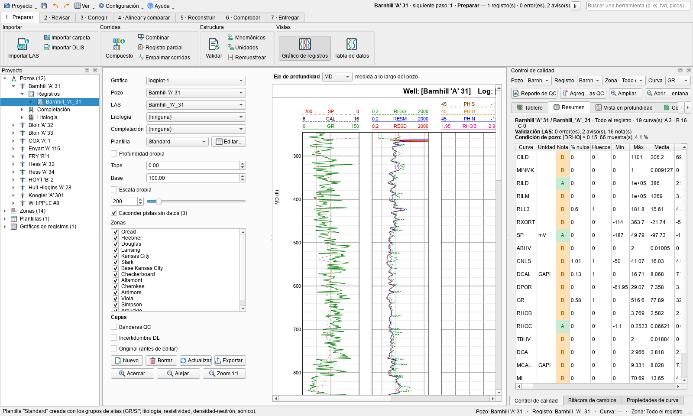
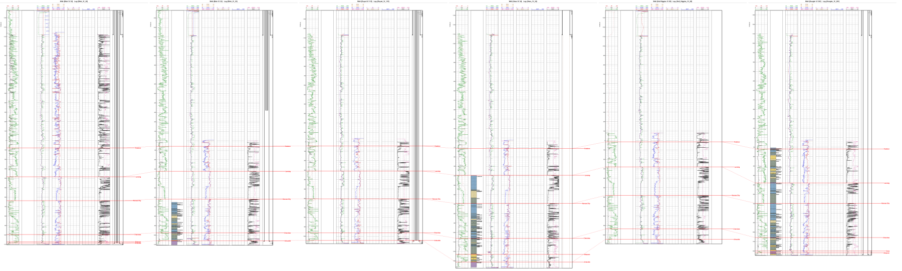
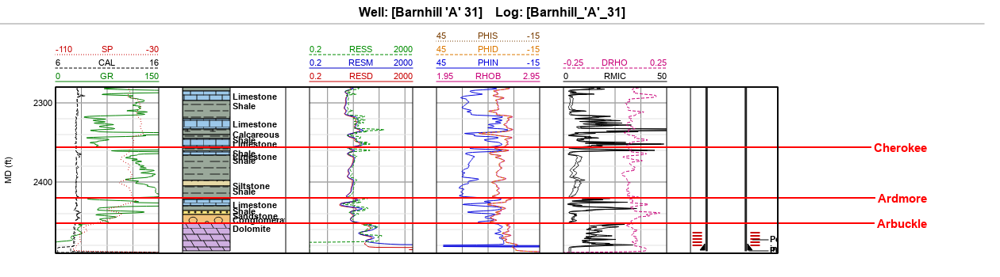
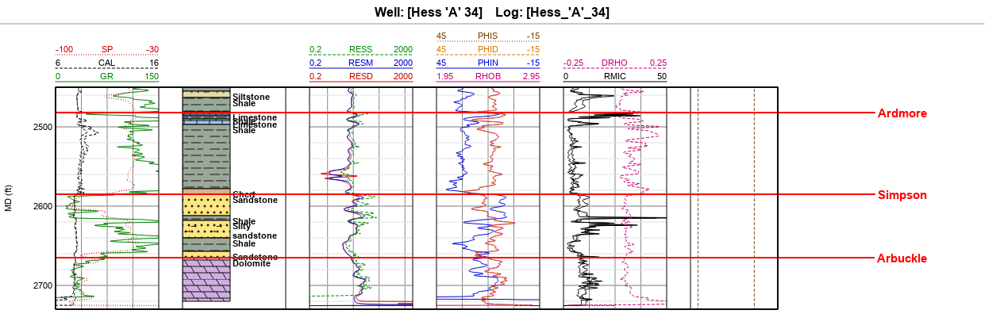
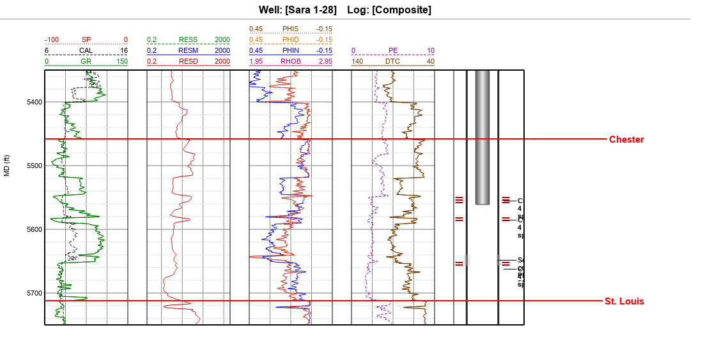
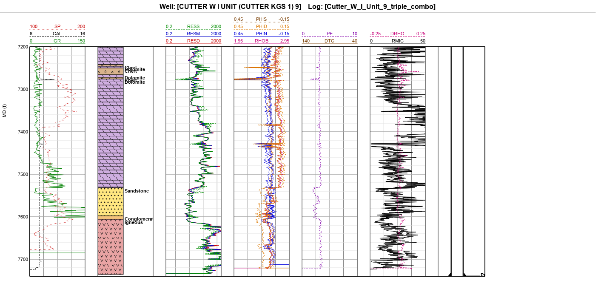
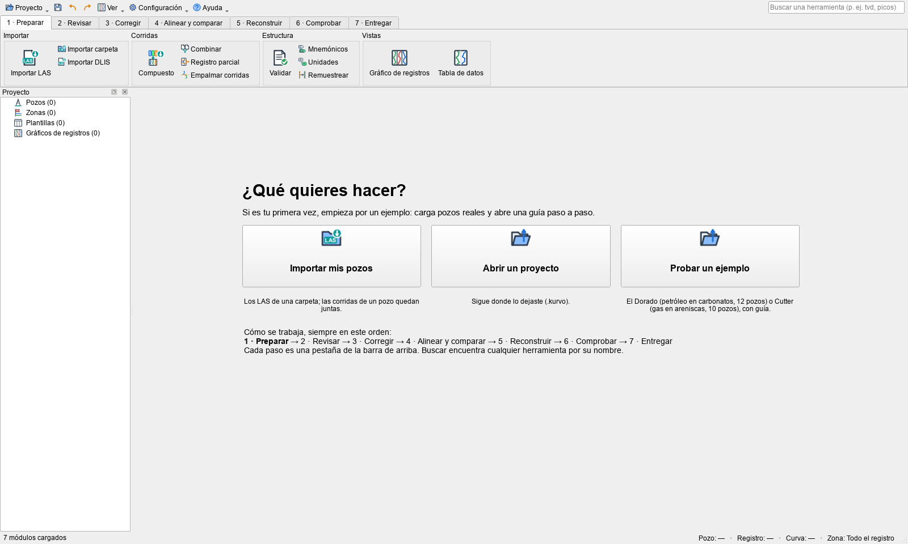

El problema
Un campo petrolero guarda registros de pozo de seis décadas: curvas digitalizadas de papel, corridas sueltas, nombres que cambian de una compañía a otra, picos, huecos y tramos que nunca se midieron. Antes de interpretar, alguien tiene que ponerlos en orden.
Kurvo hace ese trabajo de mantenimiento de curvas. Lee archivos LAS y DLIS, pone una nota de calidad a cada curva, las repara con vista previa y deshacer, las compara con los pozos vecinos, reconstruye lo que falta y entrega archivos limpios. Está pensado para quien empieza: cada paso muestra solo sus herramientas, el programa dice cuál es el siguiente y cada cambio queda anotado.

Siete pasos, en el orden del trabajo
La barra superior no agrupa las herramientas por tipo, sino por el momento del trabajo en que se usan. Elige un paso:
Caso real 1 · El Dorado: ¿por qué un pozo dio agua?
Bloir 'A' 33 se perforó en 2011 a 300 m de Bloir 'A' 32, que produce 100 barriles de petróleo por día. Bloir 'A' 33 dio 1 barril de petróleo y 315 de agua, y se taponó en 2014. ¿Por qué?
Doce pozos del campo El Dorado (Kansas) con petróleo en dolomitas del Arbuckle, a unos 2500 ft. Hay productores, un pozo seco, un inyector y registros de 1962 y 1982, con su litología transcrita de los mud logs y su mecánica: revestimientos, cañoneos y tapones.

La petrofísica (porosidad de densidad con matriz dolomita, Archie con un Rw medido de 0,19 ohm-m y m = 2,3) da la misma saturación en los dos pozos: 0,73 contra 0,68. La diferencia está en la roca y la completación. Bloir 'A' 33 tiene solo unos 8 ft porosos bajo un tope compacto, y se completó en pozo abierto a lo largo de 36 ft: fluyó el agua de abajo. Bloir 'A' 32 se completó solo en los 9 ft porosos del tope.


Caso real 2 · Cutter: gas, petróleo y agua en una arenisca
Sara 1-28 se completó en 1997 como pozo de gas, con tres pruebas de formación (DST). ¿Los registros muestran dónde estaba el gas, dónde el petróleo y dónde el agua?
Diez pozos del oeste de Kansas con gas y petróleo en las areniscas Morrow y Chester, a 5500 ft. Los registros de los 90 llegan en varias corridas de papel digitalizado; Kurvo las une en un compuesto por pozo, quita los picos y normaliza los rayos gamma contra un vecino.

Con Rw = 0,038 ohm-m, sacado del gráfico de Pickett en una arena de agua, la saturación de Archie reproduce lo que se decidió en 1997:
| Intervalo (ft) | Porosidad | Resistividad | Sw | Lo que pasó |
|---|---|---|---|---|
| 5550–5558 | 0,11 | 24 ohm-m | 0,36 | Gas a superficie en 2,5 min; se cañoneó |
| 5584–5588 | 0,14 | 21 ohm-m | 0,35 | Gas; se cañoneó |
| 5654–5670 | 0,13 | 4,8 ohm-m | 0,66 | Petróleo con agua: se cementó para aislarla |
| 5672–5680 | 0,16 | 1,5 ohm-m | 1,00 | Agua |

Reconstruir lo que falta, sin exagerar
Cuando un pozo no tiene una curva en un tramo, Kurvo puede estimarla con una red neuronal entrenada en los vecinos. La red entrega la curva y su incertidumbre, calibrada con un pozo que no vio al entrenar.
Empezar
Windows: descarga Kurvo-1.0-setup.exe y sigue el asistente: no pide permisos de
administrador y se desinstala como cualquier programa. Si prefieres no instalar, descarga el zip y abre
Kurvo-sinDL.exe. En la pantalla de inicio, Probar un ejemplo carga El Dorado o Cutter y abre su guía paso a paso.

Desde el código: instala uv
(winget install astral-sh.uv), descarga el código y haz doble clic en run.bat. La primera
vez prepara todo, Python incluido, y abre Kurvo. En Linux o macOS:
git clone https://github.com/OilCoder/kurvo.git
cd kurvo
uv venv .venv --python 3.12
uv pip install --python .venv/bin/python -e ".[dlis]"
.venv/bin/python -m kurvo
Lo que todavía no hace
- La reconstrucción con deep learning no viene en el ejecutable; se usa desde el código.
- La clasificación de litofacies con deep learning no está validada con datos reales.
- Las pruebas de formación (DST) todavía no se marcan en el gráfico.
- Las etiquetas de la completación se superponen cuando los elementos están muy juntos.